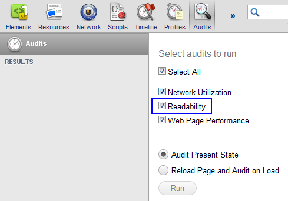
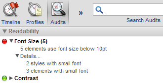

Use the experimental.webInspector.audits module to add new audit
categories and rules to WebInspector's Audit panel.
See WebInspector API summary for general introduction to using WebInspector API.
Each audit category is represented by a line on Select audits to run screen in the Audits panel. The following example adds a category named Readability:
var category = webInspector.audits.addCategory("Readability", 2);

If the category's checkbox is checked, the onAuditStarted event of
that category will be fired when user clicks the Run button.
The event handler in your extension receives AuditResults
as an argument and should add one or more results using addResult()
method. This may be done asynchronously, i.e. after the handler returns. The
run of the category is considered to be complete once the extension adds the
number of results declared when adding the category with
experimental.webInspector.audits.addCategory() or
calls AuditResult's done() method.
The results may include additional details visualized as an expandable
tree by the Audits panel. You may build the details tree using
createResult() and addChild() methods. The child node
may include specially formatted fragments created by
auditResults.snippet() or auditResults.url().
category.onAuditStarted.addListener(function(results) {
var details = results.createResult("Details...");
var styles = details.addChild("2 styles with small font");
var elements = details.addChild("3 elements with small font");
results.addResult("Font Size (5)",
"5 elements use font size below 10pt",
results.Severity.Severe,
details);
results.addResult("Contrast",
"Text should stand out from background",
results.Severity.Info);
});
The audit result tree produced by the snippet above will look like this:
